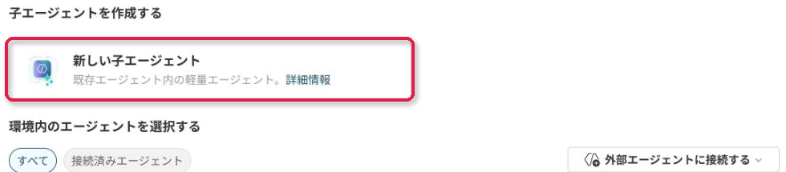
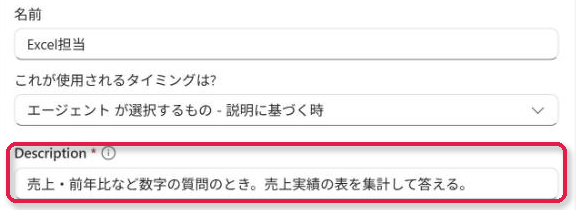
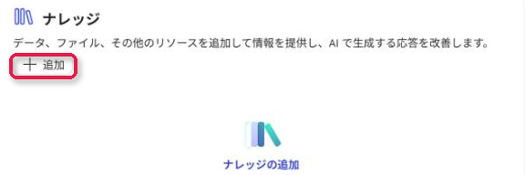

<!DOCTYPE html>
<html lang="ja">
<head>
<meta charset="UTF-8">
<meta name="viewport" content="width=1280, initial-scale=1">
<title>コパスタ Vol.19-3 実際の画面：新しい子エージェント</title>
<link rel="preconnect" href="https://fonts.googleapis.com">
<link rel="preconnect" href="https://fonts.gstatic.com" crossorigin>
<link href="https://fonts.googleapis.com/css2?family=Noto+Sans+JP:wght@400;500;700;900&display=swap" rel="stylesheet">
<link rel="stylesheet" href="../_base/cs-base.css">
<style>
  .body{gap:14px;padding-bottom:0;}
  .shotcol{flex:0 0 860px;max-width:860px;min-width:0;min-height:0;display:flex;flex-direction:column;gap:6px;}
  .real{flex:0 0 auto;align-self:flex-start;font-size:15px;font-weight:900;color:#fff;background:var(--cs);border-radius:999px;padding:3px 14px;}
  .shots{flex:1;min-height:0;display:flex;flex-direction:column;gap:8px;}
  .top{flex:0 0 auto;padding-top:26px;}
  .top img{height:auto;}
  .row2{flex:1;min-height:0;display:flex;gap:10px;}
  .row2 .big{flex:1.5;padding-top:26px;}
  .row2 .shot:not(.big){flex:1;padding-top:26px;}
  .shot{flex:1;min-height:0;min-width:0;background:#fff;border:2.5px solid var(--cs-line);border-radius:12px;overflow:hidden;display:flex;
    align-items:center;justify-content:center;box-shadow:0 4px 10px rgba(91,33,182,.15);position:relative;}
  .shot img{width:100%;height:100%;object-fit:contain;display:block;}
  .lab{position:absolute;left:7px;top:7px;font-size:14px;font-weight:900;color:#fff;background:#E11D48;border-radius:7px;padding:2px 9px;
    box-shadow:0 2px 5px rgba(0,0,0,.25);z-index:2;}
  .shot.big{border-color:#E11D48;}
  .steps{flex:1;min-width:0;display:flex;flex-direction:column;gap:8px;}
  .st{flex:1;min-height:0;display:flex;gap:11px;align-items:center;background:#fff;border:2.5px solid var(--cs-line);border-radius:12px;padding:6px 12px;}
  .st .n{flex:0 0 auto;width:36px;height:36px;border-radius:10px;color:#fff;display:flex;align-items:center;justify-content:center;font-weight:900;font-size:20px;
    background:linear-gradient(135deg,#7C3AED,#C026D3);}
  .st .t{font-size:18.5px;font-weight:900;color:var(--navy);line-height:1.3;}
  .st .t b{color:var(--cs);}
  .st .t small{display:block;font-size:15px;font-weight:700;color:#4B5563;line-height:1.36;margin-top:1px;}
  .st.key{border-color:#E11D48;background:#FFF1F2;}
  .st.key .n{background:#E11D48;}
  .st.hint{background:#FFFBEB;border-color:#F59E0B;}
  .st.hint .n{background:linear-gradient(180deg,#FBBF24,#D97706);}
  .nextbar{flex:0 0 auto;margin:10px 18px 22px;display:flex;align-items:center;gap:12px;background:var(--cs-bg);border:2px solid var(--cs-line);
    border-radius:12px;padding:8px 18px;font-size:19px;font-weight:900;color:var(--cs-dark);}
  .nextbar .msi{width:28px;height:28px;}
  .src2{position:absolute;left:20px;bottom:5px;font-size:11.5px;font-weight:500;color:#9CA3AF;}
</style>
</head>
<body>
<div id="slide"></div>
<script>
const A="../../pptx/_assets/";
document.getElementById('slide').innerHTML=`
  <div class="titlebar">
    <div class="vol-pill">コパスタ Vol.19</div>
    <div class="part-pill">実際の画面 <b>(3/4)</b></div>
    <div class="title-text">「エージェント」タブの＋追加 →<br><span class="q">新しい子エージェント</span></div>
    <div class="ibadge"><span class="pl">+</span></div>
    
  </div>

  <div class="concl">
    <div class="chip">実機</div>
    <div class="txt">受付のエージェントの中に、担当を1人ずつ足していく。<br>
      肝心なのは必須の<b>Description</b>。受付は<em>ここを読んで担当を選ぶ</em>。</div>
  </div>

  <div class="body">
    <div class="shotcol">
      <div class="real">実際の画面（2026年11月・Copilot Studio）</div>
      <div class="shots">
        <div class="shot top"><span class="lab">① 「エージェント」タブの＋追加で出る画面</span></div>
        <div class="row2">
          <div class="shot big"><span class="lab">② 名前と Description</span></div>
          <div class="shot"><span class="lab">③ ナレッジ</span></div>
        </div>
      </div>
    </div>
    <div class="steps">
      <div class="st"><span class="n">1</span><span class="t">「エージェント」タブの<b>＋追加</b><small>受付のエージェントを開いて</small></span></div>
      <div class="st"><span class="n">2</span><span class="t"><b>新しい子エージェント</b><small>既存エージェント内の軽量エージェント</small></span></div>
      <div class="st key"><span class="n">3</span><span class="t"><b>Description</b> に1〜2文<small>タイミングは既定の<br>「説明に基づく時」のまま</small></span></div>
      <div class="st"><span class="n">4</span><span class="t">ナレッジの<b>＋追加</b><small>その担当の資料だけ入れて「保存」</small></span></div>
      <div class="st hint"><span class="n">!</span><span class="t">別に公開しなくていい<small>担当は受付の中にいる</small></span></div>
    </div>
  </div>

  <div class="nextbar">→ 子エージェントと「接続されたエージェント」の使い分けは4枚目へ</div>
  <div class="src2">出典：Microsoft Learn（子エージェントを追加する）／撮影は 2026年11月の Copilot Studio（PA45 Demo 環境）・資料名は架空</div>
`;
</script>
</body>
</html>
